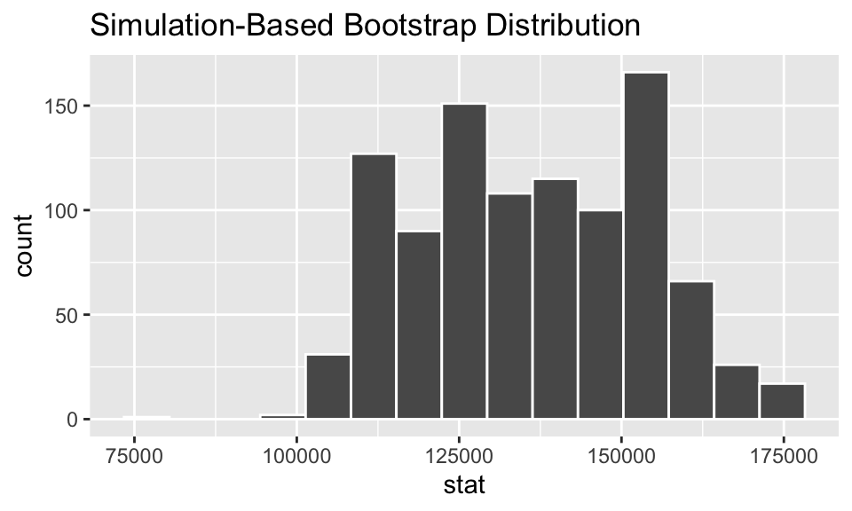

Creating a Bootstrap Distribution with infer
Data
Per the California Privacy Rights Act (CPRA), the salaries of employees of the state of California are required to be public. We will revisit the 2019 salaries of head coaches from CSU and UC universities introduced this week.
First, let’s load the coaches data set into your workspace and take a look at what the data look like.
glimpse(coaches)Section 1
Starting with one sample
For our investigation, we are interested in estimating the median salary for all CSU and UC coaches. In class we talked about creating the sampling distribution of the median salary, since I had the salaries of every CSU and UC head coach.
Today, I’ve given you a simple random sample of 50 coaches from the master dataset of all CSU and UC coaches. This context should feel more familiar — you are interested in estimating the value of the true median salary of all CSU and UC head coaches, given a sample of 50 coaches.
The population median salary of all CSU and UC coaches is: $137,619. Let’s see how close our sample median is to this population median!
Use the summarize() function to calculate the median Total Pay & Benefits for your sample of 50 coaches.
summarize(coaches)
# What goes inside the summarize() function?summarize(coaches,
median = median(`Total Pay & Benefits`))Plotting the data is possibly more important than calculating the sample statistic, since it gives us an idea of the distribution of these 50 salaries.
Create a histogram of the salaries from the sample of 50 coaches. I’ve given you some code to start with, but you’ll need to add to it!
ggplot(data = coaches,
mapping = aes(x = ___)) # Use the numerical variable we are interested in!
ggplot(data = coaches,
mapping = aes(x = `Total Pay & Benefits`)) # Add a histogram to the plot
ggplot(data = coaches,
mapping = aes(x = `Total Pay & Benefits`)) +
geom_histogram()# Make the histogram look a bit better with binwidths!
ggplot(data = coaches,
mapping = aes(x = `Total Pay & Benefits`)) +
geom_histogram(binwidth = 75000)Section 2
Now, let’s take our single sample of 50 and see what we might have gotten from other random samples!
One Resample
We’ll start with getting one bootstrap resample. To do this we take our original sample (stored in the coaches dataset) and resample with replacement 50 times. The rep_sample_n() function from the infer package helps us obtain one of these resamples. All we need to do is specify the size and replace arguments.
Keep in mind: how large your resample should be and whether you should sample with or without replacement
one_resample <- rep_sample_n(coaches,
size = ___,
replace = ___)one_resample <- rep_sample_n(coaches,
size = 50,
replace = ___)one_resample <- rep_sample_n(coaches,
size = 50,
replace = TRUE)Let’s compare our resample with our original sample. Your original sample had a median of $137,619. Use the summarize() function to find the median of this resample.
Hint: Remember to use the one_resample dataset!
Multiple Resamples
Now, let’s take what we learned about creating and summarizing one bootstrap resample and scale it up!
First, we’re going to create 500 different bootstrap resamples, each of size 50. We’re still using the rep_sample_n() function to do this, but now we specify the number of resamples we want with the reps argument.
Modify your previous code to create 500 bootstrap resamples.
multiple_resamples <- rep_sample_n(coaches,
size = ___,
replace = ___,
reps = ___)# These are the options we used for one resample!
multiple_resamples <- rep_sample_n(coaches,
size = 50,
replace = TRUE,
reps = ___)# We want 500 resamples!
multiple_resamples <- rep_sample_n(coaches,
size = 50,
replace = TRUE,
reps = 500)Now that we have 500 resamples we need to summarize each sample with a single statistic. In our investigation we are interested in the sample median, so that’s the statistic we will use.
Calculate the median Total Pay & Benefits for each resample. The multiple_resamples dataset contains 25000 numbers — 50 observations for 500 samples. So, to get each resample’s median we need to group_by() the sample ID column (replicate) before we calculate the median.
multiple_resamples %>% # Make different groups for each sample
multiple_resamples %>%
group_by(replicate)# Find the median of each group
multiple_resamples %>%
group_by(replicate) %>%
summarize(median = median(`Total Pay & Benefits`))Section 3
For confidence intervals, we’d like to have a method that is a bit more dynamic than what we’ve been doing with rep_sample_n(), group_by(), and summarize(). The infer package includes tools that help us create bootstrap resamples, visualize the distribution of our bootstrap statistics, and find confidence intervals.
The infer pipeline
Generating bootstrap statistics has a similar process to what we used previously, but it has a very different feel. The process looks something like this:
Let’s walk through each of the components of the infer “pipeline.”
Step 1: specify() your response (and explanatory) variable(s)
This step declares to R what variable(s) you are interested in. For this tutorial we are only interested in one variable: Total Pay & Benefits. In the future, we will include an explanatory variable to help explain the variability in the response variable.

Step 2: generate() resamples
The generate() step takes your original data and generates bootstrap resamples. It knows how many resamples to generate from the quantity specified in the reps argument. Additionally, it knows to sample with replacement when the type argument is set to "bootstrap".

Step 3: calculate() bootstrap statistics
Now that you’ve generated lots of bootstrap resamples, you need to summarize them with a single statistic. That statistic is what you tell the calculate() function to find! There are lots of different statistics we will explore, but for this investigation our stat will be a "median".

Your turn!
Take what you’ve learned about the infer pipeline and create a new dataset, named coaches_resample that contains median salaries calculated from 1000 bootstrap resamples.
coaches_resample <- coaches %>%
specify(___) %>%
generate(___) %>%
calculate(___)# Specify what your response variable is!
coaches_resample <- coaches %>%
specify(response = `Total Pay & Benefits`) %>%
generate(___) %>%
calculate(___)# Generate 1000 bootstrap resamples!
coaches_resample <- coaches %>%
specify(response = `Total Pay & Benefits`) %>%
generate(reps = 1000, type = "bootstrap") %>%
calculate(___)# Calculate the median for each resample!
coaches_resample <- coaches %>%
specify(response = `Total Pay & Benefits`) %>%
generate(reps = 1000, type = "bootstrap") %>%
calculate(stat = "median")Section 4
Alright, our final step is to use our bootstrap statistics to calculate a confidence interval for the true median salary of all CSU and UC head coaches.
A nice first step is to visualize how the distribution of bootstrap statistics looks. The coaches_resample object contains 1000 medians calculated from 1000 different bootstrap resamples. Let’s use the built-in visualize() function to make a quick histogram of these bootstrap medians.
visualise(coaches_resample)
It looks like the majority of medians fall between $162,502 and $110,064, but let’s quantify this range with a confidence interval.
The get_confidence_interval() function is what we use to find a confidence interval from a set of bootstrap statistics. This function takes three arguments:
- a dataset containing bootstrap statistics
- the level of confidence that should be used
- the type of method to use when making the interval
This looks something like:
Using these tools, calculate a 99% confidence interval for the population median using the 1000 bootstrap statistics you found previously. Use the percentile method to calculate your confidence interval.
When you are done, preview what your confidence interval looks like!
coaches_CI <- coaches_resample %>%
get_confidence_interval(level = ___, type = ___)# For a 99% interval your level is 0.99
coaches_CI <- coaches_resample %>%
get_confidence_interval(level = 0.99, type = ___)# For a percentile CI you use the "percentile" method
coaches_CI <- coaches_resample %>%
get_confidence_interval(level = 0.99, type = "percentile")How would you interpret the interval you got?